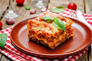

Lasagna Recipes

Anyone who loves lasagna will enjoy prepering and/or eating this dish.
with friends and family. There is a room for variation lovers too.
Ingredients
- ½ (16 ounce) package lasagna noodles
- ½ pound lean ground beef
- salt and pepper to taste
- ½ (16 ounce) jar spaghetti sauce
- ½ clove garlic, minced
- ¼ pound shredded mozzarella cheese
- ¼ pound shredded Cheddar cheese
- 1 tablespoon ricotta cheese
Directions
- Put the dray ingrediants
- Put the dray ingrediants
- Put the dray ingrediants